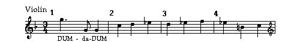
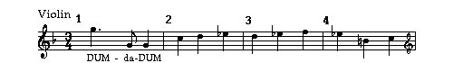

Beethoven's Ninth Symphony Beethoven's Ninth Symphony
Beethoven's Ninth Symphony Beethoven's Ninth Symphony
 


Molto vivace (Very lively)
After the drama of the first movement, audiences would expect a slow, relaxed second movement. Beethoven doesn't supply it. Instead he opens the curtain with a jarring scherzo. A schezo is a rapid movement in triple meter; in this treatment it would be more appropriate for a dance.
The Development section is famous for its use of the timpani and for Beethoven's unusual decision to play Ritmo di tre battute (rhythm groups of three bars.) During the premier, this section was interrupted by applause as an enthusiastic audience demanded a repetition of the theme. The Recapitulation section does not imitate the Exposition section, instead it begins with a climatic orchestral statement, functioning almost as a retransition of the theme. The effect is electrifying.
In dance movements, a trio is a contrasting middle section. The contrasts in the trio section could not be more pronounced. From a stormy scherzo in triple meter, Beethoven introduces a gentle major in duple meter: a preview of the resolution from the fourth movement.Following a trio, it was customary to repeat the main section. In this case that would mean repeating the scherzo. The Italian term, da capo means literally "to the head", in other words, "back to the beginning".